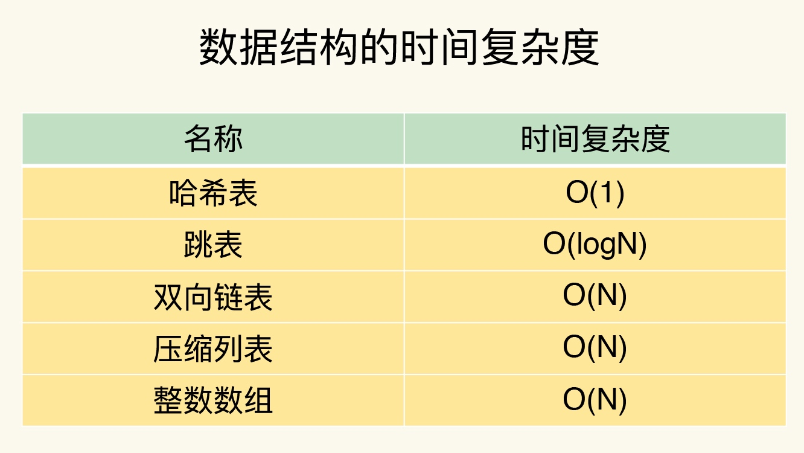

redis可以用来做什么，缓存，分布式锁。
- 记录帖子的点赞数、评论数和点击数 (hash)。
- 记录用户的帖子 ID 列表 (排序)，便于快速显示用户的帖子列表 (zset)。
- 记录帖子的标题、摘要、作者和封面信息，用于列表页展示 (hash)。
- 记录帖子的点赞用户 ID 列表，评论 ID 列表，用于显示和去重计数 (zset)。
- 缓存近期热帖内容 (帖子内容空间占用比较大)，减少数据库压力 (hash)。
- 记录帖子的相关文章 ID，根据内容推荐相关帖子 (list)。
- 如果帖子 ID 是整数自增的，可以使用 Redis 来分配帖子 ID(计数器)。
- 收藏集和帖子之间的关系 (zset)。
- 记录热榜帖子 ID 列表，总热榜和分类热榜 (zset)。
- 缓存用户行为历史，进行恶意行为过滤 (zset,hash)。
Redis 由意大利人 Salvatore Sanfilippo （网名 Antirez ）开发。我们都知道 Redis 的默认端口是 6379 ，这个端口号也不是随机选的，而是由于机键盘字母“MERZ ”的位置决定的。MERZ ”在 Antirez 的朋友圈语言中是咱 ”的代名词，它由于意大利广告女郎“Alessia Merz ＂在电视节目上说了一堆愚蠢的话而被人熟知。
拓展阅读：
天下无难试之Redis面试刁难大全
《Redis 作者 Antirez 经历的「性别歧视」风波》
redis安装
Docker 方式
# 拉取 redis 镜像
> docker pull redis
# 运行 redis 容器
> docker run --name myredis -d -p6379:6379 redis
# 执行容器中的 redis-cli，可以直接使用命令行操作 redis
> docker exec -it myredis redis-cli
Github 源码编译方式
# 下载源码
> git clone --branch 2.8 --depth 1 git@github.com:antirez/redis.git
> cd redis
# 编译
> make
> cd src
# 运行服务器，daemonize表示在后台运行
> ./redis-server --daemonize yes
# 运行命令行
> ./redis-cli
直接安装方式
# mac
> brew install redis
# ubuntu
> apt-get install redis
# redhat
> yum install redis
# 运行客户端
> redis-cli
数据结构
redis基础数据结构 5种
- 字符串String
- 字典Hash
- 列表List
- 集合Set
- 有序集合SortedSet
新增:
- HyperLogLog
- Bitmap 位图
- GEO 地理坐标 redis3.2
- stream 流 redis5.0
底层实现的数据结构：
- 简单动态字符串
- 双向链表
- 压缩列表
- 哈希表
- 跳表
- 整数数组

全局哈希表
为了实现从键到值的快速访问，Redis 使用了一个哈希表来保存所有键值对。
一个哈希表，其实就是一个数组，数组的每个元素称为一个哈希桶。哈希桶中的元素保存的并不是值本身，而是指向具体值的指针。这也就是说，不管值是 String，还是集合类型，哈希桶中的元素都是指向它们的指针。
哈希桶中的 entry 元素中保存了 *key 和 *value 指针，分别指向了实际的键和值，这样一来，即使值是一个集合，也可以通过 *value 指针被查找到。
哈希冲突与rehash
哈希冲突时，使用链表。链表过长会触发rehash。
为了使 rehash 操作更高效，Redis 默认使用了两个全局哈希表：哈希表 1 和哈希表 2。一开始，当你刚插入数据时，默认使用哈希表 1，此时的哈希表 2 并没有被分配空间。随着数据逐步增多，Redis 开始执行 rehash，这个过程分为三步：
- 给哈希表 2 分配更大的空间，例如是当前哈希表 1 大小的两倍；
- 把哈希表 1 中的数据重新映射并拷贝到哈希表 2 中；
- 释放哈希表 1 的空间。
为了避免大量的数据拷贝，一次性把哈希表 1 中的数据都迁移完，造成 Redis 线程阻塞，无法服务其他请求。Redis采用渐进式rehash。
简单来说就是在第二步拷贝数据时，Redis 仍然正常处理客户端请求，每处理一个请求时，从哈希表 1 中的第一个索引位置开始，顺带着将这个索引位置上的所有 entries 拷贝到哈希表 2 中；等处理下一个请求时，再顺带拷贝哈希表 1 中的下一个索引位置的 entries。如下图所示：
string 字符串
Redis 的字符串是动态字符串，是可以修改的字符串，内部结构实现上类似于 Java 的 ArrayList，采用预分配冗余空间的方式来减少内存的频繁分配，如图中所示，内部为当前字符串实际分配的空间 capacity 一般要高于实际字符串长度 len。当字符串长度小于 1M 时，扩容都是加倍现有的空间，如果超过 1M，扩容时一次只会多扩 1M 的空间。需要注意的是字符串最大长度为 512M。
键值对
> set name codehole
OK
> get name
"codehole"
> exists name
(integer) 1
> del name
(integer) 1
> get name
(nil)
批量键值对
可以批量对多个字符串进行读写，节省网络耗时开销。
> set name1 codehole
OK
> set name2 holycoder
OK
> mget name1 name2 name3 # 返回一个列表
1) "codehole"
2) "holycoder"
3) (nil)
> mset name1 boy name2 girl name3 unknown
> mget name1 name2 name3
1) "boy"
2) "girl"
3) "unknown"
过期和 set 命令扩展
可以对 key 设置过期时间，到点自动删除，这个功能常用来控制缓存的失效时间。
> set name codehole
> get name
"codehole"
> expire name 5 # 5s 后过期
... # wait for 5s
> get name
(nil)
> setex name 5 codehole # 5s 后过期，等价于 set+expire
> get name
"codehole"
... # wait for 5s
> get name
(nil)
> setnx name codehole # 如果 name 不存在就执行 set 创建
(integer) 1
> get name
"codehole"
> setnx name holycoder
(integer) 0 # 因为 name 已经存在，所以 set 创建不成功
> get name
"codehole" # 没有改变
计数
如果 value 值是一个整数，还可以对它进行自增操作。自增是有范围的，它的范围是 signed long 的最大最小值，超过了这个值，Redis 会报错。
> set age 30
OK
> incr age
(integer) 31
> incrby age 5
(integer) 36
> incrby age -5
(integer) 31
> set codehole 9223372036854775807 # Long.Max
OK
> incr codehole
(error) ERR increment or decrement would overflow
list (列表)
Redis 的列表相当于 Java 语言里面的 LinkedList，注意它是链表而不是数组。这意味着 list 的插入和删除操作非常快，时间复杂度为 O(1)，但是索引定位很慢，时间复杂度为 O(n)，这点让人非常意外。
当列表弹出了最后一个元素之后，该数据结构自动被删除，内存被回收。
Redis 的列表结构常用来做异步队列使用。将需要延后处理的任务结构体序列化成字符串塞进 Redis 的列表，另一个线程从这个列表中轮询数据进行处理。
右边进左边出：队列
队列是先进先出的数据结构，常用于消息排队和异步逻辑处理，它会确保元素
的访问顺序性。
> rpush books python java golang
(integer) 3
> llen books
(integer) 3
> lpop books
"python"
> lpop books
"java"
> lpop books
"golang"
> lpop books
(nil)
右边进右边出：栈
栈是先进后出的数据结构，跟队列正好相反 Redis 的列表数据结构来做栈使
用的业务场景并不多见。
> rpush books python java golang
(integer) 3
> rpop books
"golang"
> rpop books
"java"
> rpop books
"python"
> rpop books
(nil)
慢操作
lindex 相当于 Java 链表的get(int index)方法，它需要对链表进行遍历，性能随着参数index增大而变差。
ltrim 和字面上的含义不太一样，个人觉得它叫 lretain(保留) 更合适一些，因为 ltrim 跟的两个参数start_index和end_index定义了一个区间，在这个区间内的值，ltrim 要保留，区间之外统统砍掉。我们可以通过ltrim来实现一个定长的链表，这一点非常有用。
index 可以为负数，index=-1表示倒数第一个元素，同样index=-2表示倒数第二个元素。
> rpush books python java golang
(integer) 3
> lindex books 1 # O(n) 慎用
"java"
> lrange books 0 -1 # 获取所有元素，O(n) 慎用
1) "python"
2) "java"
3) "golang"
> ltrim books 1 -1 # O(n) 慎用
OK
> lrange books 0 -1
1) "java"
2) "golang"
> ltrim books 1 0 # 这其实是清空了整个列表，因为区间范围长度为负
OK
> llen books
(integer) 0
快速列表
如果再深入一点，你会发现 Redis 底层存储的还不是一个简单的 linkedlist，而是称之为快速链表 quicklist 的一个结构。
首先在列表元素较少的情况下会使用一块连续的内存存储，这个结构是 ziplist，也即是压缩列表。它将所有的元素紧挨着一起存储，分配的是一块连续的内存。当数据量比较多的时候才会改成 quicklist。因为普通的链表需要的附加指针空间太大，会比较浪费空间，而且会加重内存的碎片化。比如这个列表里存的只是 int 类型的数据，结构上还需要两个额外的指针 prev 和 next 。所以 Redis 将链表和 ziplist 结合起来组成了 quicklist。也就是将多个 ziplist 使用双向指针串起来使用。这样既满足了快速的插入删除性能，又不会出现太大的空间冗余。
压缩列表
压缩列表实际上类似于一个数组，数组中的每一个元素都对应保存一个数据。和数组不同的是，压缩列表在表头有三个字段 zlbytes、zltail 和 zllen，分别表示列表长度、列表尾的偏移量和列表中的 entry 个数；压缩列表在表尾还有一个 zlend，表示列表结束。
在压缩列表中，如果我们要查找定位第一个元素和最后一个元素，可以通过表头三个字段的长度直接定位，复杂度是 O(1)。而查找其他元素时，就没有这么高效了，只能逐个查找，此时的复杂度就是 O(N) 了。
hash (字典)
Redis 的字典相当于 Java 语言里面的 HashMap，它是无序字典。内部实现结构上同 Java 的 HashMap 也是一致的，同样的数组 + 链表二维结构。第一维 hash 的数组位置碰撞时，就会将碰撞的元素使用链表串接起来。
Java 的 HashMap 在字典很大时，rehash 是个耗时的操作，需要一次性全部 rehash。Redis 为了高性能，不能堵塞服务，所以采用了渐进式 rehash 策略。渐进式 rehash 会在 rehash 的同时，保留新旧两个 hash 结构，查询时会同时查询两个 hash 结构，然后在后续的定时任务中以及 hash 操作指令中，循序渐进地将旧 hash 的内容一点点迁移到新的 hash 结构中。当搬迁完成了，就会使用新的hash结构取而代之。
当 hash 移除了最后一个元素之后，该数据结构自动被删除，内存被回收。
hash 结构也可以用来存储用户信息，不同于字符串一次性需要全部序列化整个对象，hash 可以对用户结构中的每个字段单独存储。这样当我们需要获取用户信息时可以进行部分获取。而以整个字符串的形式去保存用户信息的话就只能一次性全部读取，这样就会比较浪费网络流量。
hash 也有缺点，hash 结构的存储消耗要高于单个字符串，到底该使用 hash 还是字符串，需要根据实际情况再三权衡。
> hset books java "think in java" # 命令行的字符串如果包含空格，要用引号括起来
(integer) 1
> hset books golang "concurrency in go"
(integer) 1
> hset books python "python cookbook"
(integer) 1
> hgetall books # entries()，key 和 value 间隔出现
1) "java"
2) "think in java"
3) "golang"
4) "concurrency in go"
5) "python"
6) "python cookbook"
> hlen books
(integer) 3
> hget books java
"think in java"
> hset books golang "learning go programming" # 因为是更新操作，所以返回 0
(integer) 0
> hget books golang
"learning go programming"
> hmset books java "effective java" python "learning python" golang "modern golang programming" # 批量 set
OK
同字符串对象一样，hash 结构中的单个子 key 也可以进行计数，它对应的指令是 hincrby，和 incr 使用基本一样。
# 老钱又老了一岁
> hincrby user-laoqian age 1
(integer) 30
set (集合)
Redis 的集合相当于 Java 语言里面的 HashSet，它内部的键值对是无序的唯一的。它的内部实现相当于一个特殊的字典，字典中所有的 value 都是一个值NULL。
当集合中最后一个元素移除之后，数据结构自动删除，内存被回收。
> sadd books python
(integer) 1
> sadd books python # 重复
(integer) 0
> sadd books java golang
(integer) 2
> smembers books # 注意顺序，和插入的并不一致，因为 set 是无序的
1) "java"
2) "python"
3) "golang"
> sismember books java # 查询某个 value 是否存在，相当于 contains(o)
(integer) 1
> sismember books rust
(integer) 0
> scard books # 获取长度相当于 count()
(integer) 3
> spop books # 弹出一个
"java"
zset (有序集合)
zset 可能是 Redis 提供的最为特色的数据结构，它也是在面试中面试官最爱问的数据结构。它类似于 Java 的 SortedSet 和 HashMap 的结合体，一方面它是一个 set，保证了内部 value 的唯一性，另一方面它可以给每个 value 赋予一个 score，代表这个 value 的排序权重。它的内部实现用的是一种叫做「跳跃列表」的数据结构。
> zadd books 9.0 "think in java"
(integer) 1
> zadd books 8.9 "java concurrency"
(integer) 1
> zadd books 8.6 "java cookbook"
(integer) 1
> zrange books 0 -1 # 按 score 排序列出，参数区间为排名范围
1) "java cookbook"
2) "java concurrency"
3) "think in java"
> zrevrange books 0 -1 # 按 score 逆序列出，参数区间为排名范围
1) "think in java"
2) "java concurrency"
3) "java cookbook"
> zcard books # 相当于 count()
(integer) 3
> zscore books "java concurrency" # 获取指定 value 的 score
"8.9000000000000004" # 内部 score 使用 double 类型进行存储，所以存在小数点精度问题
> zrank books "java concurrency" # 排名
(integer) 1
> zrangebyscore books 0 8.91 # 根据分值区间遍历 zset
1) "java cookbook"
2) "java concurrency"
> zrangebyscore books -inf 8.91 withscores # 根据分值区间 (-∞, 8.91] 遍历 zset，同时返回分值。inf 代表 infinite，无穷大的意思。
1) "java cookbook"
2) "8.5999999999999996"
3) "java concurrency"
4) "8.9000000000000004"
> zrem books "java concurrency" # 删除 value
(integer) 1
> zrange books 0 -1
1) "java cookbook"
2) "think in java"
跳跃列表
zset 内部的排序功能是通过「跳跃列表」数据结构来实现的，它的结构非常特殊，也比较复杂。
因为 zset 要支持随机的插入和删除，所以它不好使用数组来表示。我们先看一个普通的链表结构。
我们需要这个链表按照 score 值进行排序。这意味着当有新元素需要插入时，要定位到特定位置的插入点，这样才可以继续保证链表是有序的。通常我们会通过二分查找来找到插入点，但是二分查找的对象必须是数组，只有数组才可以支持快速位置定位，链表做不到，那该怎么办？
利用二分法，分层给数据建立索引，将时间复杂度从 O(n) -> O(logn)
跳表在链表的基础上，增加了多级索引，通过索引位置的几个跳转，实现数据的快速定位。例如：查找33的例子
容器型数据结构的通用规则
list/set/hash/zset 这四种数据结构是容器型数据结构，它们共享下面两条通用规则：
create if not exists
如果容器不存在，那就创建一个，再进行操作。比如 rpush 操作刚开始是没有列表的，Redis 就会自动创建一个，然后再 rpush 进去新元素。
drop if no elements
如果容器里元素没有了，那么立即删除元素，释放内存。这意味着 lpop 操作到最后一个元素，列表就消失了。
过期时间
Redis 所有的数据结构都可以设置过期时间，时间到了，Redis 会自动删除相应的对象。需要注意的是过期是以对象为单位，比如一个 hash 结构的过期是整个 hash 对象的过期，而不是其中的某个子 key。
还有一个需要特别注意的地方是如果一个字符串已经设置了过期时间，然后你调用了 set 方法修改了它，它的过期时间会消失。
127.0.0.1:6379> set codehole yoyo
OK
127.0.0.1:6379> expire codehole 600
(integer) 1
127.0.0.1:6379> ttl codehole
(integer) 597
127.0.0.1:6379> set codehole yoyo
OK
127.0.0.1:6379> ttl codehole
(integer) -1
不同操作的复杂度
口诀：
- 单元素操作是基础；
- 范围操作非常耗时；
- 统计操作通常高效；
- 例外情况只有几个。
第一，单元素操作，是指每一种集合类型对单个数据实现的增删改查操作。例如，Hash 类型的 HGET、HSET 和 HDEL，Set 类型的 SADD、SREM、SRANDMEMBER 等。这些操作的复杂度由集合采用的数据结构决定，例如，HGET、HSET 和 HDEL 是对哈希表做操作，所以它们的复杂度都是 O(1)；Set 类型用哈希表作为底层数据结构时，它的 SADD、SREM、SRANDMEMBER 复杂度也是 O(1)。
这里，有个地方你需要注意一下，集合类型支持同时对多个元素进行增删改查，例如 Hash 类型的 HMGET 和 HMSET，Set 类型的 SADD 也支持同时增加多个元素。此时，这些操作的复杂度，就是由单个元素操作复杂度和元素个数决定的。例如，HMSET 增加 M 个元素时，复杂度就从 O(1) 变成 O(M) 了。
第二，范围操作，是指集合类型中的遍历操作，可以返回集合中的所有数据，比如 Hash 类型的 HGETALL 和 Set 类型的 SMEMBERS，或者返回一个范围内的部分数据，比如 List 类型的 LRANGE 和 ZSet 类型的 ZRANGE。这类操作的复杂度一般是 O(N)，比较耗时，我们应该尽量避免。
不过，Redis 从 2.8 版本开始提供了 SCAN 系列操作（包括 HSCAN，SSCAN 和 ZSCAN），这类操作实现了渐进式遍历，每次只返回有限数量的数据。这样一来，相比于 HGETALL、SMEMBERS 这类操作来说，就避免了一次性返回所有元素而导致的 Redis 阻塞。
第三，统计操作，是指集合类型对集合中所有元素个数的记录，例如 LLEN 和 SCARD。这类操作复杂度只有 O(1)，这是因为当集合类型采用压缩列表、双向链表、整数数组这些数据结构时，这些结构中专门记录了元素的个数统计，因此可以高效地完成相关操作。
第四，例外情况，是指某些数据结构的特殊记录，例如压缩列表和双向链表都会记录表头和表尾的偏移量。这样一来，对于 List 类型的 LPOP、RPOP、LPUSH、RPUSH 这四个操作来说，它们是在列表的头尾增删元素，这就可以通过偏移量直接定位，所以它们的复杂度也只有 O(1)，可以实现快速操作。
扩展阅读
来源：极客时间-Redis核心技术与实战、掘金小册-Redis 深度历险：核心原理与应用实践4618129422)`
本文由 Sajor
创作，采用 知识共享署名4.0 国际许可协议进行许可
本站文章除注明转载/出处外，均为本站原创或翻译，转载前请务必署名
最后编辑时间为: 2022-02-15T15:26:20+08:00